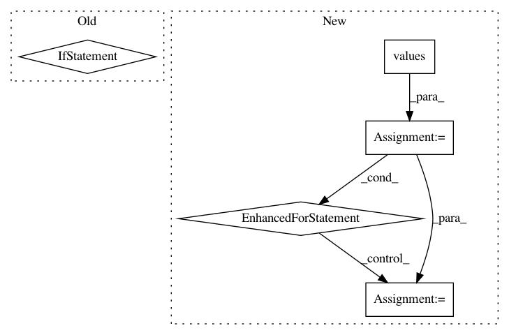

f19ace982075ea009af81f5e9f687cc2276f50ea,scripts/bert/fp16_utils.py,,grad_global_norm,#Any#Any#,24
Before Change
// reduce
ctx, dtype = arrays[0].context, "float32"
norms = [nd.add_n(*g).as_in_context(ctx) for g in norm_groups.values()]
total_norm = nd.add_n(*norms).sqrt()
scale = total_norm / max_norm
// is_finite = 0 if NaN or Inf, 1 otherwise.
After Change
batch_size : int
Batch size of data processed. Gradient will be normalized by `1/batch_size`.
Set this to 1 if you normalized loss manually with `loss = mean(loss)`.
max_norm : NDArray, optional, default is None
max value for global 2-norm of gradients.
self.fp32_trainer.allreduce_grads()
step_size = batch_size * self._scaler.loss_scale
if max_norm:
_, ratio, is_finite = nlp.utils.grad_global_norm(self.fp32_trainer._params,
max_norm * self._scaler.loss_scale)
step_size = ratio * step_size
In pattern: SUPERPATTERN
Frequency: 3
Non-data size: 5
Instances
Project Name: dmlc/gluon-nlp
Commit Name: f19ace982075ea009af81f5e9f687cc2276f50ea
Time: 2020-01-20
Author: 50716238+MoisesHer@users.noreply.github.com
File Name: scripts/bert/fp16_utils.py
Class Name:
Method Name: grad_global_norm
Project Name: williamFalcon/pytorch-lightning
Commit Name: 9f12ca095ab6e3295bd03fd1e50130a12b11569c
Time: 2021-02-11
Author: carlossmocholi@gmail.com
File Name: pytorch_lightning/trainer/connectors/logger_connector/epoch_result_store.py
Class Name: HookResultStore
Method Name: auto_reduce_results_on_epoch_end
Project Name: OpenMined/PySyft
Commit Name: 489972a9e467eb20a7ebbe2b5e37c63b3d5bb2aa
Time: 2020-10-19
Author: murarugeorgec@gmail.com
File Name: syft/frameworks/torch/tensors/interpreters/additive_shared.py
Class Name: AdditiveSharingTensor
Method Name: get_garbage_collect_data